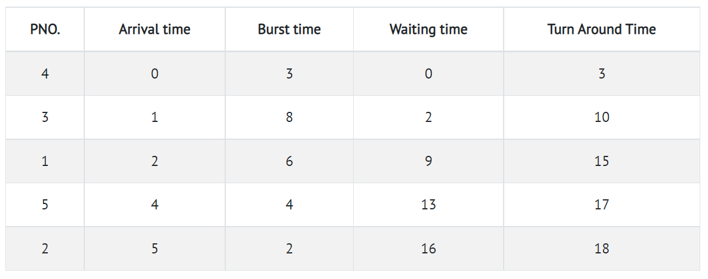

First Come First Serve
Introduction
First come first serve (FCFS) scheduling algorithm simply schedules the jobs according to their arrival time. The job which comes first in the ready queue will get the CPU first. The lesser the arrival time of the job, the sooner will the job get the CPU. FCFS scheduling may cause the problem of starvation if the burst time of the first process is the longest among all the jobs.
Example
Let's take an example of The FCFS scheduling algorithm. In the Following schedule, there are 5 processes with process ID P1, P2, P3, P4 and P5. P1 arrives at time 2, P2 at time 5, P3 at time 1, P4 arrives at time 0 and Process P5 arrives at time 4 in the ready queue. The processes and their respective Arrival and Burst time are given in the following table.

Step 0) The process begins with P4 which has arrival time 0
Step 1) At time=1, P3 arrives. P4 is still executing. Hence, P3 is kept in a queue.
Step 2) At time=2, P1 arrives which is kept in the queue.
Step 3) At time=3, P4 process completes its execution.
Step 4) At time=4, P3, which is first in the queue, starts execution.
Step 5) At time=5, P2 arrives, and it is kept in a queue.
Step 6) At time 11, P3 completes its execution.
Step 7) At time=11, P1 starts execution. It has a burst time of 6. It completes execution at time interval 17
Step 8) At time=17, P5 starts execution. It has a burst time of 4. It completes execution at time=21
Step 9) At time=21, P2 starts execution. It has a burst time of 2. It completes execution at time interval 23
Step 10) Let's calculate the average waiting time for above example.
The Turnaround time and the waiting time are calculated by using the following formula.
Turn Around Time = Completion Time - Arrival Time Waiting Time = Turnaround time - Burst Time
Advantages
- The simplest form of a CPU scheduling algorithm
- Easy to program
- First come first served
Disadvantages
- It is a Non-Preemptive CPU scheduling algorithm, so after the process has been
allocated to the CPU, it will never release the CPU until it finishes executing. - The Average Waiting Time is high.
- Short processes that are at the back of the queue have to wait for the long
process at the front to finish. - Not an ideal technique for time-sharing systems.
- Because of its simplicity, FCFS is not very efficient.